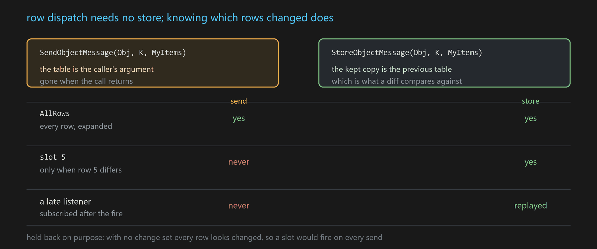
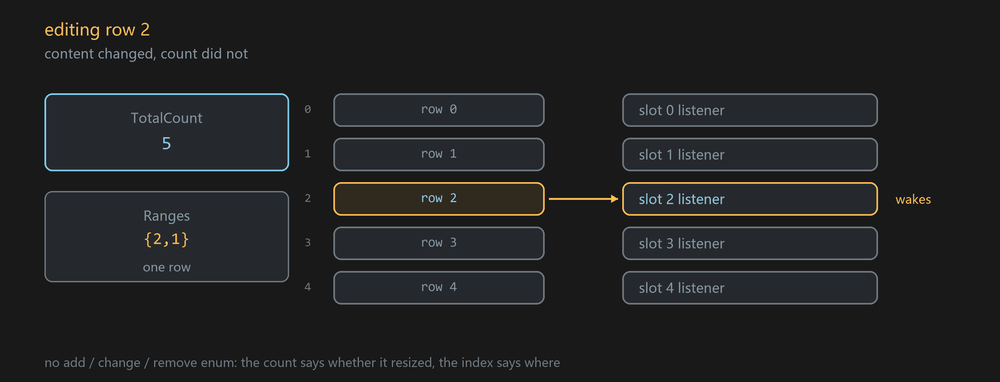
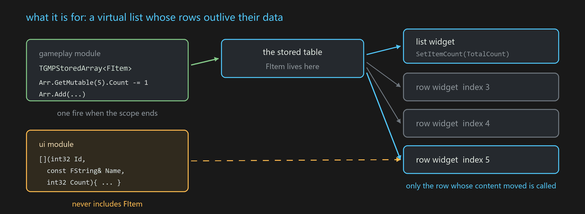

This is a write-up of a recent round of work on GMP (GenericMessagePlugin, a decoupled messaging plugin for UE): teaching the message system to see the rows inside an array.
It starts from something small — sending a message whose parameter is an array. That always worked; the receiving end just got it at too coarse a grain. Following "how do we make the grain finer" leads straight to StoreMessage, and answers an older awkward question along the way: how do you message about many instances of the same thing.
The first half is scenarios and usage. The second half is the implementation.
Part one · what it is and how to use it
1. Sending an array leaves the receiver a lot of work
An array has always been a legal message parameter:
USTRUCT() struct FItem
{
GENERATED_BODY()
UPROPERTY() int32 Id;
UPROPERTY() FString Name;
UPROPERTY() int32 Count;
};
FGMPHelper::SendObjectMessage(Obj, MSGKEY("Inv.Items"), MyItems); // TArray<FItem>
FGMPHelper::ListenObjectMessage(Obj, MSGKEY("Inv.Items"), this,
[this](const TArray<FItem>& All){ RebuildWholeList(All); });
It runs, but the receiver is left doing three things:
Walking the array. The message hands you the whole thing; taking it apart is your problem.
Asking "is this one mine?" in every consumer. UI is shaped one widget per row — the widget for slot 5 only cares about slot 5. As written, it takes the whole array, indexes into it, and compares to decide whether anything moved. N widgets means N whole-array callbacks, N-1 of which return immediately.
Knowing what FItem is. The receiver has to include the element's header. That is exactly the coupling a message system exists to avoid: the parameter types are decoupled, the element type is not.
The array has a row dimension in it, and the message system cannot see it. This round is about making it visible.
2. Row dispatch: a plain send is enough
When the single parameter of a message is an array of USTRUCT, GMP recognises a collection, and the listening side gains row subscriptions:
// the sending side is unchanged
FGMPHelper::SendObjectMessage(Obj, MSGKEY("Inv.Items"), MyItems);
// receiving: once per row, members expanded into arguments
FGMPHelper::ListenObjectMessage(Obj, MSGKEY("Inv.Items"), GMP::AllRows, this,
[](int32 Row, int32 Id, const FString& Name, int32 Count){ UpdateRow(Row, Id, Name, Count); });
Look at that lambda: FItem does not appear in it. The element's members are expanded into arguments in declaration order, through reflection. A UI module consuming a table defined by a gameplay module does not include its header — what used to be decoupled was the message's parameter types, and now the element type comes with it.
A lambda may also declare only the first few members (GMP already lets a listener drop trailing arguments), so somewhere that only wants Id writes one parameter.

Recognition comes from the shape of what was sent, not from a new function name. So nobody has to learn this who does not want it: the whole-table listener above behaves exactly as before. The only switch for the new semantics is a trailing const FGMPStoreUpdate& on the lambda (or using the overload that takes an Index). Without it, it is an ordinary listen.
Two of the three chores are now gone. The third — "call me only when my row changed" — is not.
3. Knowing which rows changed requires a previous table
A slot subscription looks like this:
// fires only when the content at position 5 is now something else
FGMPHelper::ListenObjectMessage(Obj, MSGKEY("Inv.Items"), 5, this,
[](int32 Id, const FString& Name, int32 Count){ ... });
This is the shape a virtual list row widget wants. But it only works if the system can decide that "position 5 differs from a moment ago".
SendObjectMessage cannot give that. It is event semantics: it goes out, whoever is listening at that moment receives it, and then it is gone. Send another array next frame and there is no earlier one on hand to compare against.
So the dividing line is a hard one:
Row dispatch needs no storage. Knowing which rows changed does — because "incremental" presupposes "a previous one".

On the send path the collection is therefore a reduced one: AllRows only, and every fire is a full reload. Slot subscriptions are deliberately held back — without that, one would wake on every single send, and not-waking-for-someone-else's-row is the entire reason it exists. Staying silent is easier to diagnose than firing for no reason.
The reduced version is genuinely useful for tables that are recomputed every tick and immediately stale: radar blips, currently visible enemies, nearby interactables. Keeping a store for those is pure overhead; what you want is the row expansion and the absence of a type dependency.
For the full thing, the system has to hold on to that previous table.
4. StoreMessage: letting a message say "what it is now"
GMP has had this for a long time, and it exists for a different problem.
A plain send is event semantics, which is right for "something just happened" — the player fired, an enemy died, a button was clicked. But plenty of things are state: the current level config, the player's gold, what is in the bag. State under event semantics hits an annoying ordering problem — the broadcast happens before anyone listens. The data module broadcasts its config during init, when the UI does not exist yet; by the time the UI is up and listening, that message is long gone, and it can only wait for the next change, which may never come.
StoreObjectMessage is the answer:
FGMPHelper::StoreObjectMessage(Obj, MSGKEY("Inv.Items"), MyItems); // sent, and the latest is kept
Whoever listens on that key at any later point gets one immediate replay, as if they had been there all along. It stops mattering when the UI is created.
(Its close relative is OnceObjectMessage: also kept, but deleted once the first listener consumes it. Store fits state, Once fits a one-shot completion notice.)
The part that matters here: the copy it keeps is exactly the "previous one". With it, the next store on the same key can be diffed row by row with UScriptStruct::CompareScriptStruct:
FGMPHelper::StoreObjectMessage(Obj, MSGKEY("Inv.Items"), MyItems); // hand over the whole array; GMP works out the rows
The sender never has to describe its own edit — handing over the whole array is as precise as describing the change. That matters most for existing code: keep writing it the way you always did, and subscribers now get exact row information out of it.
All three subscription shapes are available:
// the whole table -- a reference to the stored array, not a copy
ListenObjectMessage(Obj, K, this,
[](const TArray<FItem>& All, const FGMPStoreUpdate& U){ ... });
// one slot -- fires only when position 5 now reads differently
ListenObjectMessage(Obj, K, 5, this,
[](int32 Id, const FString& Name, int32 Count){ ... });
// once per changed row
ListenObjectMessage(Obj, K, GMP::AllRows, this,
[](int32 Row, int32 Id, const FString& Name, int32 Count){ ... });
What a listener is told:
struct FGMPStoreRange { int32 Index; int32 Count; };
struct FGMPStoreUpdate
{
int32 TotalCount; // the table size after the change
TArrayView<const FGMPStoreRange> Ranges; // which rows now read differently
int32 PrevTotalCount; // the size before it
int32 Row; // row callbacks only
...
};
No add/change/remove enum, and no reset — the two dimensions already carry it (reasoning in part two). Editing row 3 keeps the count; inserting at 3 raises it; removing at 3 lowers it.
The division of labour
SendObjectMessage |
StoreObjectMessage |
|
|---|---|---|
| a listener arriving late | nothing | replayed once |
| which rows changed | whole table only | exact ranges |
| slot subscription | never fires | works |
| incremental write (next section) | not applicable | works |
| fits | recomputed per tick, immediately stale | state worth keeping |
5. Incremental writes: use it like a TArray
With a store, the reverse also works — edit in place instead of resending everything:
{
TGMPStoredArray<FItem> Arr(Obj, MSGKEY("Inv.Items"));
Arr.GetMutable(5).Count -= 1;
Arr.Add(FItem{1002, TEXT("Elixir"), 5});
Arr.RemoveAt(7);
} // one fire on destruction, spans already merged
The change information here is not compared into existence, it is recorded by the writer — every GetMutable/Add/RemoveAt notes a span, and the lot is published when the scope ends.
Two constraints you will meet:
Stack-only — operator new and the copy/move constructors are deleted. It fires on destruction, so allowing it as a member would make the timing of that fire impossible to reason about.
operator[] is const-only; writing goes through GetMutable(i). A non-const operator[] returns a reference and then the wrapper has no idea whether the caller wrote anything, so it would have to mark the row anyway — meaning a mere read would trigger a full UI refresh. Making the write explicit removes the false positives.
6. A fixed row is a position, not an element
This is the one semantic to understand before using it. Subscribing to row 5 means "whatever is displayed at position 5", not "one particular element":
| what happened | the subscriber watching position 5 |
|---|---|
| row 5 edited | fires |
| row 3 edited | does not fire |
| insert at 3 | fires — the old row 4 moved into position 5 |
| remove at 3 | fires — the old row 6 moved into position 5 |
| insert or remove at 8 | does not fire |

Which is exactly what a virtual list row widget wants: it is "the fifth cell on screen", and it shows whoever gets moved into it.
When the position is gone
Whether you are told "your position is gone" is chosen explicitly at the listen site. The encoding is a symmetric ~:
Index |
meaning | when the position disappears |
|---|---|---|
5 |
position 5 | not told |
GMP::WithRemoval(5) (i.e. ~5) |
position 5 | told |
GMP::AllRows (MAX_int32) |
every changed row | not told |
GMP::AllRowsWithRemoval (~MAX_int32) |
every changed row | told |
The callback side reads the same rule: U.Row >= 0 is a live row, U.Row < 0 means ~U.Row is gone, and the data arguments are a default-constructed stand-in that must not be read.
FGMPHelper::ListenObjectMessage(Obj, K, GMP::WithRemoval(5), this,
[](int32 Id, const FString& Name, int32 Count, const FGMPStoreUpdate& U)
{
if (U.IsRowRemoved()) { PlayExitAnim(); return; } // Id/Name/Count are defaults here
Label->SetText(Name);
});
Why choose explicitly? Because the notice costs something: shrinking a 10-row table with SetNum(3) calls a subscriber that wanted removals 7 times. That cost belongs to whoever actually needs it. Putting it at the listen site also makes the intent visible without reading the lambda's parameter list.
A vanished position does not invalidate the subscription — grow the table back and it starts firing again. It subscribed to a position, and the position never went anywhere.
7. The older question this answers: one key, N instances
Looking back after building it, this answers something that had always been slightly awkward in GMP: many instances of the same thing, and how to message about them.
There was an answer already. It just had a range of applicability.

The existing answer is to let the source distinguish them. GMP's dispatch has an orthogonal dimension besides the message name: SigSource. Five party members are five UObjects, each doing SendObjectMessage(MemberObj, MSGKEY("Party.HP"), NewHP), and a health bar listens to its own Member. One key, five instances, no interference — and when the object is destroyed, every listen and sticky message sourced from it is dropped automatically, so lifetime rides on the engine's.
If the instances are not separate objects but logical partitions on one object, a composite source of "object + name" also works:
FSigSource Src = FSigSource::MakeSigSourceKey(ManagerObj, TEXT("HP"));
Blueprint has the same thing as the FGMPObjNamePair{Obj, Name} pin. One Manager carrying "HP", "MP" and "Stamina" as three independent messages under one name reads nicely.
But the name route has a boundary: it wants names that are fixed and known to both sides in advance. Once names are produced at run time, in a count nobody knows up front, three things get in the way:
- The subscriber has to know the name first.
listentakes a name. A name produced at run time — a spawned entity, an entry pushed from the server — is not something the subscriber can know, and there is no meta-notification for "a new name appeared". It can only wait, without knowing what for. - You cannot ask how many there are, or which. Each
(Obj, Name)is an independent source keeping its own payload; there is no aggregate view. That is precisely the first thing a list UI needs: how many rows. - Nothing disappears on its own. Cleanup has two routes only — a batch wipe when the source object dies, or an explicit
RemoveSourceKey. With names generated and abandoned, the records pile up for as long as the host object lives.
The rows of a collection have all three for free: adding and removing is the array's business; the whole-table subscriber knows TotalCount and the contents by construction; a row that is gone is just an element that is gone.
So which one
The real dividing line is not "how many instances" but:
Is this instance's identity an object, or a position?
| one key, many sources | one key, one table, many rows | |
|---|---|---|
| how instances differ | a FSigSource each, or an object+Name composite |
an array index |
| identity | the object | the position |
| fits | long-lived, owns its state, others hold references to it | churns constantly, consumed by recycled widgets |
| names / count | must be fixed and known in advance | dynamic churn is the norm |
| lifetime | dies with the source, cleaned automatically | rows are array elements |
| per-instance cost | an object, or a row in the composite table | none |
The choice has a real price: a position is not an identity. If what you mean is "the head equipment slot, and I do not care what other slots do", an index cannot express it — inserting anything before it makes it drift. That case wants a key field on the element, and it is deliberately not folded in here.
That is the usage. The implementation follows.
Part two · implementation
8. Recognition and storage: both were already there
Recognition is cached per runtime struct and resolved once:
TFieldIterator<FProperty> It(RuntimeStruct);
if (const FArrayProperty* ArrProp = It ? CastField<FArrayProperty>(*It) : nullptr)
if (const FStructProperty* ElemProp = CastField<FStructProperty>(ArrProp->Inner))
... // note the array offset, element type, element size
Storage needed no new container. FGMPStructUnion was already an array container — ArrayNum, GetDynamicStructAddr(Type, idx), MakeArray(TArrayView) are all there. Its copy constructor turns it into a view (ArrayNum goes negative, the TSharedPtr<uint8> is shared) and there is no COW, so editing in place requires detaching first.
That detach was also already there — the first condition in EnsureMemory is ArrayNum < 0:
if (ArrayNum < 0 || (OldStructType != NewStructPtr) || !OldStructType || ...)
{
// reallocate + deep copy
}
Hit it and you get a reallocation and a deep copy. Not one line of copy-on-write was written for this; the writer calls EnsureUnique() in its constructor and that is the whole of it.
The StoreMessage layer keeps payloads in a table indexed by signal store × source, held by FGMPStoreMsgHolder, which is an FGCObject:
virtual void AddReferencedObjects(FReferenceCollector& Collector) override
{
for (auto& StorePair : StoreMsgsMap)
for (auto& Pair : StorePair.Value)
Pair.Value.AddStructReferencedObjects(Collector);
}
So a UObject* inside a payload is not collected — the responsibility that comes with keeping things. Collections inherit all of it and add no lifetime code of their own.
9. Why there is no action enum
The two dimensions already carry it: the count says whether the table resized, the index says where. A subscriber derives the three cases itself. An enum on top of that is one more piece of information that can disagree with the facts — the writer has to keep it consistent with the ranges, and the reader has to decide which to believe.
Same for Reset: a whole-table change is a range covering everything, which says more than Reset does — Reset only says "all of it", a range also says where the bounds are.
The wake-up rule comes out of the same two dimensions: if the count did not change (a pure content edit) only the rows the ranges cover are woken; if it did, everything at Row >= min(Range.Index) is, because an insertion or removal replaced the content from that position onward.
10. The send path: the table is the caller's argument
The table on this path is called the transient table — borrowing the sense of UPROPERTY(Transient) and RF_Transient: it is not the copy in the store that sticks around, it is the caller's stack argument, gone when the call returns. In code it is GMPDispatchTransientRows and the bTransient flag on the dispatch.
Collection dispatch used to hang off the store's write path only. What the send path gained is a symmetric branch:
GMP_IF_CONSTEXPR(Flags == 0 && !SendTraits::bIsSingleShot)
{
// Nothing is stored, so the argument itself is the table for the duration of this call.
if (GMPHasStoreListeners())
GMPDispatchTransientRows(InSigSrc, MessageKey, SendTraits::AsPropRefArray(TupRef));
}
GMPHasStoreListeners() guards it: with no collection listener anywhere in the project, the argument array is not even built, and an ordinary send costs what it always did.
The view is built straight off the argument address, which works because FGMPPropStackRef already carries both the address and the property:
struct FGMPPropStackRef
{
uint8* Addr = nullptr;
const FProperty* Prop = nullptr;
};
From an FArrayProperty you get Inner, the element struct and the element size — all four constructor arguments, the same set GMPMakeStoreView builds from store memory, only sourced differently. The borrow semantics match too: valid for the callback and no longer.
Why slot listeners must be held back, with the evidence. ShouldWakeRow reads:
if (Row == AllRows)
return true;
if (Row >= Update.TotalCount)
return bWantRemoval && Row < Update.PrevTotalCount;
if (Update.IsFullReload())
return true; // <- transient always lands here
...
A transient dispatch has empty Ranges, so IsFullReload() is always true, and every slot listener would wake on every send — the exact opposite of what a slot subscription means. Hence the filter at the top of the dispatch loop:
if (bTransient && Item.Row != AllRows)
continue;
LastCounts (the per-source row count used for resize detection) is left untouched on this path as well; otherwise send and store on one key would corrupt each other's idea of what changed.
11. Span coalescing has to sort
The writer accumulates at most 8 spans, merging adjacent or overlapping ones, and degrades to "reload everything" past that.
Two implementations look sufficient here and are not.
"Find the first intersecting span, merge, return" leaves an overlap as soon as a span grows until it bridges a later one:
Spans = [{0,5}, {5,1}] another Add(5,1)
-> intersects {0,5}, merges to {0,6}, returns
-> Spans = [{0,6}, {5,1}] <- row 5 is in two spans
Row 5 then gets visited twice, and a per-row subscriber fires on it twice.
"After merging, sweep backwards and absorb anything swallowed" is not enough either. With [{0,6},{6,1},{20,1},{7,13}], walking backwards reaches {7,13} while the current span is still {0,6} (7 > 6, no intersection) and skips it; it later grows to {0,7} and never revisits what it skipped.
Sorting plus an adjacent merge — the standard interval merge — converges by construction, and hands rows to the visitor in ascending order as a side benefit.
12. Positional access has a prerequisite: skip editor-only
for (TFieldIterator<FProperty> It(ElemStruct); It; ++It)
{
if (It->IsEditorOnlyProperty())
continue;
OutProps.Add(*It);
}
Positional access assumes the member sequence is identical in every configuration. A WITH_EDITORONLY_DATA member sits in the middle of that sequence in editor and vanishes in shipping, so the same lambda reads the second field in editor and the third in a packaged build. That bug only reproduces in the packaged build, which makes it one of the worst to chase.
Any mechanism that accesses reflected members positionally has to handle this, not just GMP.
13. A tuple fast path that correctness does not depend on
When a lambda's declared arguments happen to line up with the element's memory layout — same offset, same width, same type — a row can be read at compiled offsets, skipping reflection. That path is 0.9 ns per row against 10 ns for reflection.
The point is that the decision is made at run time and falls back on failure, rather than being assumed at compile time. It is decided on the first fire and remembered:
if (Cache->DecidedFor != View.GetElementStruct())
{
Cache->DecidedFor = View.GetElementStruct();
Cache->bFast = TupleLayoutMatches<FastTuple, Tuple, 0>(...);
}
A missing UPROPERTY, an editor-only member shifting the rest, a member swapped for a same-width different type — all of these only send it back to the reflection path. The result stays correct, it is merely slower. Assume the layout at compile time instead and the same situations turn into "works fine in editor, reads the wrong field once packaged".
A rule worth taking away: if an optimisation can be expressed as "verify at run time, fall back automatically", do not express it as "assume at compile time". The failure mode of the first is slowness; the failure mode of the second is reading the wrong data.
14. Why composite sources cannot carry dynamic names
Part one claimed those records never disappear on their own. Here is the basis. Cleanup has two routes.
One is the batch wipe when the source object is destroyed:
std::set<FSigSourceExtKey, std::less<>> ToBeRemoved;
if (SigSourceExtStorages.RemoveAndCopyValue(InSig, ToBeRemoved))
{
for (auto& ExtKey : ToBeRemoved)
{
FSigSource ExtSig;
ExtSig.Addr = FSigSource::AddrType(&ExtKey) | FSigSource::ExtKey;
SigSourceKeys.Remove(ExtSig);
}
}
The other is an explicit RemoveSourceKey(Obj, Name).
There is no third. The storage is TMap<FSigSource, std::set<FSigSourceExtKey, std::less<>>>, and each name is an independently allocated node in that set. Generate names and abandon them, and the nodes stay for as long as the host object lives. A scrolling list swapping a dozen rows per frame means a dozen insertions and removals in that table per frame.
A collection's rows, by contrast, are elements of a TArray. Adding and removing them is the array's business, with no registration or cleanup attached.
15. Cost
-run=GMPUnitTest -Bench, 64 rows, Development editor, best of three:
| dispatch, whole table, one listener | 56 ns |
| dispatch, 64 slot listeners, one wakes | 253 ns |
ForEach per row, compiled offsets |
0.9 ns |
ForEach per row, reflection |
10 ns |
| for scale: an ordinary GMP slot send | ~690 ns |
Collection dispatch is an order of magnitude cheaper than one ordinary GMP send, so it will not be the bottleneck. That comparison is not a boast — it says the row-subscription abstraction costs almost nothing, and what it is worth is the idle wake-ups it removes.
16. Scripts and blueprint share one entry
Four script backends (slua, UnLua, Puerts, AngelScript) plus blueprint go through a single GMPListenScriptRows. Each supplies only its own bridge from the (int32 Row, <element>) pair of addresses to its own callable:
local key = GMP.ListenRowMessage(WatchedObj, "Inv.Items", WeakObj, 5, function(Row, Item)
if Row < 0 then return end -- ~Row is gone, Item is a default
Label:SetText(Item.Name)
end)
AngelScript's callbacks are typed funcdefs, so a collection tag additionally generates a declaration per tag, checked at compile time:
funcdef void FOnRow_Inv_Items(int Row, FItem Item);
int64 asListenRow_Inv_Items(UObject WatchedObj, UObject WeakObj, int Index, FOnRow_Inv_Items@ cb, int Times = -1);
Lifetime rides an ordinary GMP listener registered inside that shared entry, so the whole UnbindMessage family works unchanged and no backend needs teardown code of its own. Blueprint right-clicks a listen node and switches it to Row, which adds an Index input pin and turns the output into (Row, Item).
Closing
The thread is short.
Sending an array always worked; the receiver just had to walk it, decide whether each row was its own, and include the element type. Making the message system see the row dimension removes the walking and the type dependency — and that much works with a plain SendObjectMessage.
What it cannot give you is "call me only when my row changed", because that needs a comparison against a previous table, and a send is gone once it returns. This is where StoreObjectMessage stops being just the fix for "broadcast before listen": the copy it keeps is exactly the previous table an incremental diff needs. With it, handing over the whole array still yields precise row changes, slot subscriptions become meaningful, and in-place incremental writes have something to write to.
So the line worth remembering: row dispatch does not depend on storage, incremental information does. A table not worth keeping can just be sent, for the reduced-but-useful half; one that needs row precision should be stored.
The second answer to "one key, N instances" falls out of the same work. The first answer is the source dimension — use it when an instance is an object, with lifetime backed by the engine, and use an object+Name composite source for fixed, known partitions. It stops holding up when names are dynamic and unbounded in count. At that point the instance's identity is a position rather than an object, and rows in a table are what that calls for.
Those two look identical in a requirements document and are entirely different things in code.